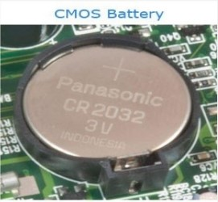

Short for Basic Input/output System, the BIOS (pronounced bye-oss) is a ROM chip found on motherboards that allows you to access and set up your computer system at the most basic level. In the picture below, is an example of what a BIOS chip may look like on your computer motherboard. In this case, this is a picture of an early AMIBIOS, a type of BIOS manufactured by AMI.
Alternatively referred to as a Real-Time Clock (RTC), Non-Volatile RAM (NVRAM) or CMOS RAM, CMOS is short for Complementary Metal-Oxide Semiconductor. CMOS is an on-board, battery powered semiconductor chip inside computers that stores information. This information ranges from the system time and date to system hardware settings for your computer. The picture shows an example of the most common CMOS coin cell battery (Panasonic CR 2032 3V) used to power the CMOS memory. The Motorola 146818 chip was the first RTC and CMOS RAM chip to be used in early IBM computers; capable of storing a total of 64 bytes of data. Since the system clock used 14 bytes of RAM, this left an additional 50bytes for storing system settings. Today, most computers have moved the settings from CMOS and integrated them into the Southbridge or Super I/O chips. Picture below; 
The standard lifetime of a CMOS battery is around 10 Years. However, this can vary depending on the use and environment in which the computer resides.
If the CMOS battery is failing the computer cannot keep the correct time or date on the computer after it has been turned off. For example, after turning your computer on you may notice the time has been set to 12:00 PM and the date is set back to January 1, 1990, if the CMOS battery has failed.